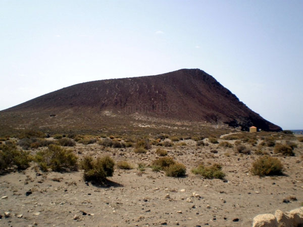

Granadilla de Abona
Atrás-

Playa Bandera Azul El Médano
-

Playa Bandera Azul La Jaquita
-

El Médano: historia, personajes y leyendas
-

Leocadio Machado, el ilustre personaje que dio nombre a la playa
-

El Médano: la cuna de los deportes náuticos de Tenerife
-

Los médanos: un ecosistema con una insólita riqueza biológica
-

Montaña Roja: el balcón del sur
-
La caseta del cable de Senegal
-

La Tejita: la playa natural más grande de Tenerife
-

La punta de El Confital y la playa del Horno: de la obtención de la cal en el pasado al uso surfista actual
-

Antiguo búnker militar
-

Piscinas naturales y la cala del Jivitero o Levitero
-

Los Abrigos, el pueblo marinero por antonomasia del sur de Tenerife